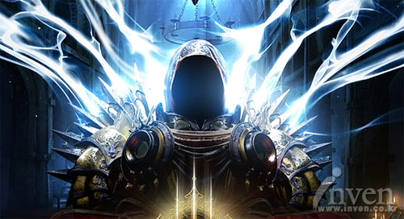

964년
■ 아즈모단과 벨리알이 이끄는 지옥의 고위 악마 대다수가 절대 악마에 대항해 일으킨 반란이 어둠의 대추방에 이르러 정점에 달하다. 디아블로와 메피스토, 그리고 바알이 불타는 지옥에서 성역으로 추방되다.
▲ 지옥의 악마 디아블로
약1004년
■ 대천사 티리엘이 인간 영웅을 한 데 모아 호라드림을 창설하다. 티리엘은 호라드림에 영혼석을 주면서 절대 악마를 찾아 가두라는 임무를 부여하다.

▲ 호라드림을 창설한 대천사 티리엘
1009년
■ 케지스탄 정글에서 붙잡힌 메피스토가 자카룸 사원 지하에 갇히다. 이곳은 점차 쿠라스트로 변화하다.
▲ 정글로 뒤덮인 쿠라스트는 메피스토의 독기로 오염된다.
1010년
■ 루트 골레인 근처 사막에서 바알의 흔적이 포착되다. 호라드림의 지도자인 탈 라샤가 자신을 희생하여 온전하지 못한 영혼석에 바알을 가두다.
▲ 자신의 몸에 바알을 봉인한 탈 라샤. 하지만 그 봉인은 불완전했다.
1019년
■ 제레드 케인이 이끄는 호라드림 수도사 무리가 마침내 디아블로를 쓰러뜨리다. 칸두라스에 있는 탈산데 강 근처에 디아블로의 영혼석이 묻히고 그 위에 호라드림 수도원과 연결된 지하 묘지가 세워지다.
1025년
■ 트리스트람 마을이 호라드림 수도원 근처에 형성되다.
▲ 저주받은 마을 트리스트람
약 1080년
■ 트리스트람에 있는 호라드림 수도원이 황폐화되다.
약 1100년
■ 수행할 임무가 사라진 호라드림이 역사와 전설 속으로 사라지다.
1258년
■ 동방의 군주인 레오릭 왕이 트리스트람으로 와서 스스로 왕이라 선포하고 오랫동안 쓰이지 않던 낡은 호라드림 수도원을 자카룸 대성당으로 바꾸다. 레오릭 왕의 조언자인 대사제 라자루스가 비밀리에 갇혔던 디아블로를 풀어주다.
■ 레오릭 왕이 디아블로의 손아귀에 들지 않으려 용감하게 싸웠지만, 점차 미쳐가다.
1263년
■ 점점 광기를 더해가는 레오릭 왕이 자신의 권력에 이의를 제기하는 사람을 전부 감옥에 가둔 뒤 변절자라는 명목하에 사형을 집행하기 시작하다. 서부진격 왕국에 전쟁을 선포하다.
■ 디아블로의 영향을 받은 라자루스 대주교가 레오릭 왕의 독자인 알브레히트 왕자를 납치한다. 공포에 질린 어린 왕자의 마음에 디아블로가 깃든다.
■ 레오릭 왕 군대의 총 수장인 라크다난이 서부진격 왕국과 처참한 전쟁을 치르고 귀환한 후 어쩔 수 없이 레오릭 왕을 살해하다. 쓰러진 레오릭 왕이 임종 직전 라크다난과 추종자들에게 저주를 내리다. 잠시 후, 라크다난과 왕실 경호대가 땅에 묻으려 할 때 레오릭 왕이 해골 제왕으로 되살아나 공격하다.
▲ 악마에 침식당한 레오닉 왕은 해골왕으로 부활하게 된다.
■ 대사제 라자루스가 마을 사람들 무리를 대성당으로 이끌고 간 다음 피에 굶주린 도살자 악마에게 넘기다. 사람들이 앞다투어 트리스트람을 떠나기 시작하다.
■ 트리스트람에 나타난 어떤 용사가 오만하고 악취를 풍기는 도살자 악마를 처치하다.
■ 영웅이 대사제 라자루스를 처치하고 해골 제왕을 물리치다.
■ 영웅이 디아블로를 물리치고 자기 안에 받아들이려 하다. 숭고한 정신에서 우러나온 행동이었으나, 고귀한 영혼이 곧바로 디아블로의 패악에 물들다. 어둠의 방랑자가 된 영웅은 트리스트람을 뒤로 한 채 떠나고, 곧이어 사악한 악마 군단이 몰려와 마을과 주민들을 학살하다
▲ 디아블로에게 영혼이 물든 영웅의 손으로 불태워지는 트리스트람
1264년
■ 한 무리의 영웅들이 디아블로와 그 형제들을 처치하고자 나서다. 악마 안다리엘을 물리친 영웅들이 어둠의 방랑자를 찾으러 동쪽으로 여행을 떠나다.
■ 악마 군주 두리엘을 탈 라샤 무덤에서 무찌르다. 바알이 영혼석에서 이미 풀려났다는 사실이 밝혀지다.
▲ 용사들의 여정을 동행한 마지막 호라드림, 데커드 케인
■ 어둠의 방랑자가 완전히 디아블로로 변하다. 영웅들이 쿠라스트 밀림 속에서 메피스토를 처치하다.
■ 디아블로가 처치되다. 디아블로의 영혼석이 메피스토의 영혼석과 함께 지옥용광로에서 파괴되다.
TOP